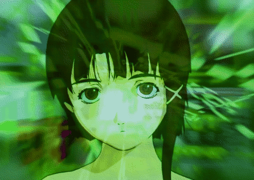
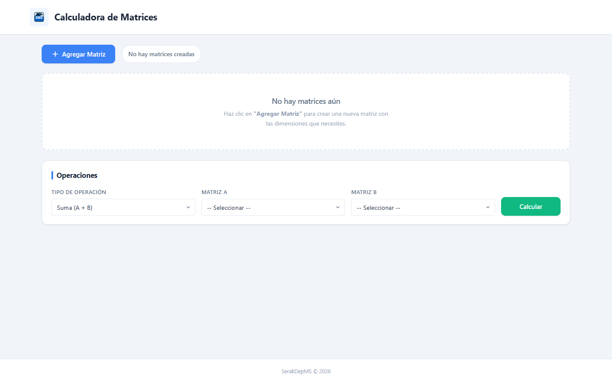
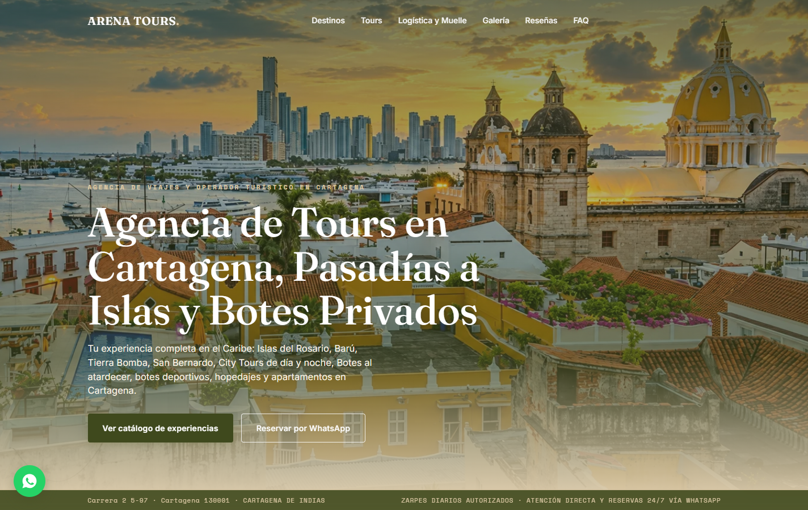
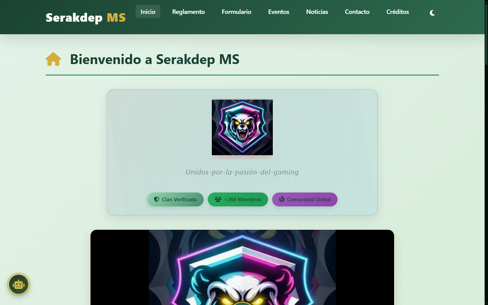
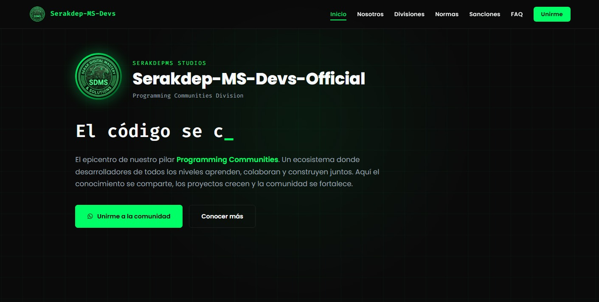
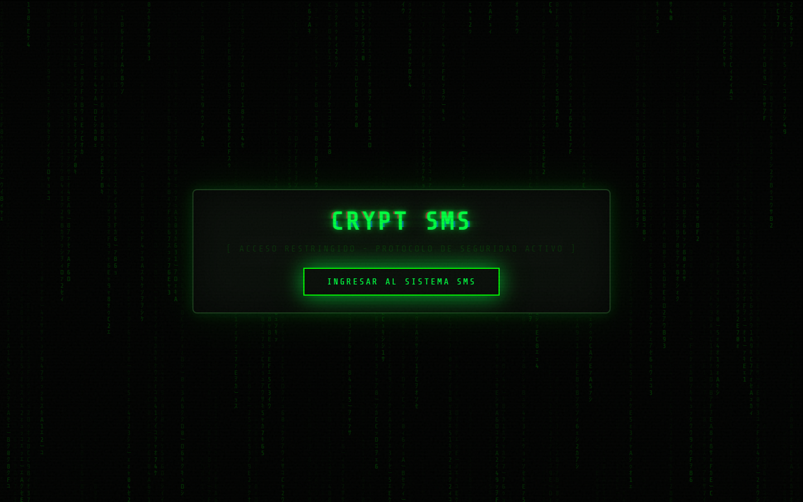
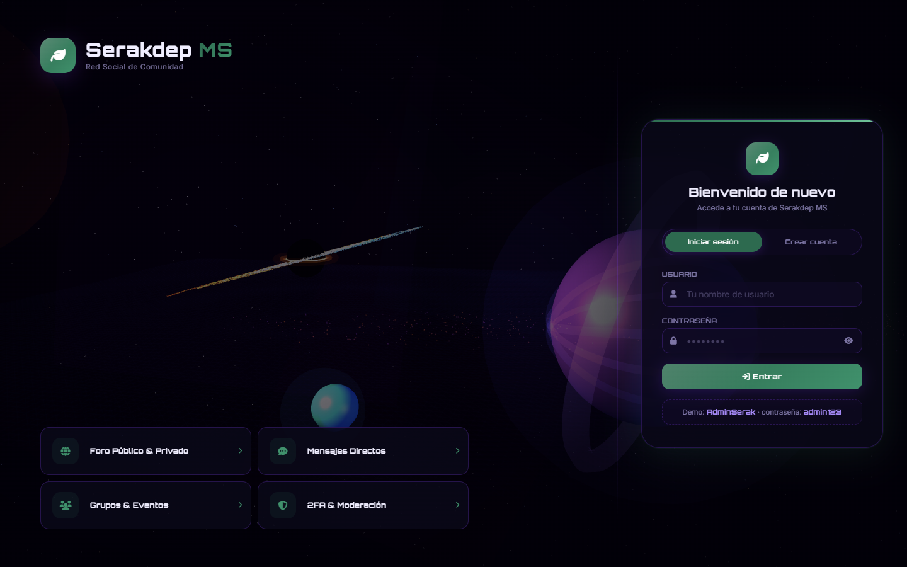

Pilar 1 — Web Development & Technology
Bajo el sello técnico de SerakDepMS. Arquitectura web, soluciones empresariales escalables, APIs de alto rendimiento, ciberseguridad y DevSecOps.
Active Digital Ecosystem
Serak Digital Mastery & Solutions. A technological hub driving innovation in web development, video game creation, and vibrant communities for gamers and programmers. Tactical cybersecurity precision meets creative digital mastery.

Access Authorization
We are SerakDepMS, a technology company focused on comprehensive digital development. We combine a 360° strategic vision with a rigorous approach to cybersecurity, end-to-end web development, interactive video game creation, and the orchestration of thriving programming and gamer communities.
"We don't just write code: we design digital ecosystems built to scale, perform at the highest level, and foster vibrant communities in web, gaming, and programming."
Ecosystem Impact
Bajo el sello técnico de SerakDepMS. Arquitectura web, soluciones empresariales escalables, APIs de alto rendimiento, ciberseguridad y DevSecOps.
Operado bajo la denominación SerakDepMS Studios. Creación de videojuegos, herramientas para eSports y gestión de las 12 divisiones Gamer de la comunidad oficial.
Operado bajo la denominación SerakDepMS Studios. Construcción y gestión de las 8 divisiones técnicas de la comunidad Devs, eventos, hackathons y proyectos colaborativos.
Roadmap
Deployment of automated infrastructures, server hardening, and high-performance microservices management for enterprise web solutions.
Creation of video games, eSports tools, and interactive experiences, alongside the management of gamer communities.
Building collaborative ecosystems, open-source initiatives, and educational spaces for developers to master new technologies.
Company Profile
End-to-end web development, backend systems, infrastructure, and interfaces designed as one connected ecosystem.
Video game development, eSports tools, and interactive experiences for the gaming community.
Building and managing communities for gamers and programmers through events, tools, and collaborative platforms.
Security by design, server hardening, and resilient architecture integrated from the start.
Deep Dive
Absolute mastery over Kernel architectures, memory flows, and OS-level security auditing across 130+ operating systems.
Design of data neural networks and distributed databases oriented towards extreme speed and software resilience.
Services & Capabilities
Focused technical services for building, securing, and scaling digital products, games, and communities.
Robust and secure APIs, dynamic high-conversion interfaces (React, Next.js), and scalable web architectures using Node.js, Python, Go, and Rust.
Creation of video games, interactive experiences, and tools for the gaming community. From concept to deployment.
Building and scaling communities for gamers and programmers. Events, hackathons, and collaborative platforms.
Deployment automation using Docker, Kubernetes, AWS, Terraform, and armored CI/CD pipelines with DevSecOps best practices.
Logs

JavaScript • Algorithms
Algorithmic engine designed for complex calculation and structured resolution of mathematical matrices.

HTML • CSS • JavaScript • Hostinger
Sitio web oficial para una agencia de turismo en Cartagena, Colombia. Plataforma completa para la promoción de tours y gestión de reservas.

Web Architecture • UI/UX • Gaming
Official web infrastructure designed for high-speed digital interaction and management of the gamer community.

Web Architecture • UI/UX • Programming
División oficial de programación de SerakDepMS Studios. Ecosistema de desarrolladores con divisiones técnicas por área.

Web Cryptography • JS
Web simulation console designed to execute cryptography tools and client-side security validation.

Beta Data Flows • Programmers
Experimental prototype focused on structuring asynchronous flows and databases for programmer interaction and collaboration.